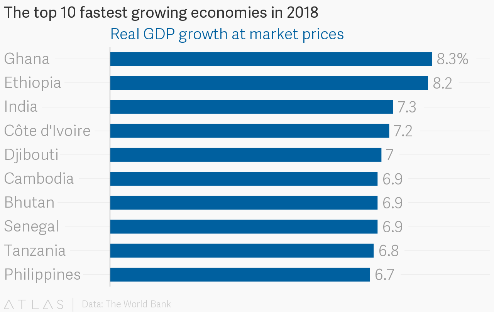

Are things in Africa only going worse?
Now Africa is good opportunity.
Let me ask you simple question which world economics are rising the fastest? You might say China, USA maybe India. Well, actually India maybe is one of the fastest growing still but 'giants' such as USA and China aren't.They give way some African countries such as Ethiopia, Nigeria, Ghana. In this chart made by Atlas using The World Bank data and this servey says that most of the top 10 fastest growing economics IN THE WORLD comes from Africa isn't it odd? Everyone knows that Africa is suffering becasue of wars, tribal conflicts, poverty, hunger. And yes this is true but I guess no one thought that Africa will suffer infinite with such problems. And the fact that recently most of the best growing economicly countries comes from Africa is the consequence of starting to deal with all this problems.
And now you might think ok so Africans countries are rich? But they are not all of us know that all the time people from Europe are going to Africa to help. They are teaching Africans, building a schools and hospitals etc. And it's true but there were always rich people in Africa and there always will be poverty and poor people as in whole world. There is walth gap problem in Africa but also in USA, Mexico, China, India. And actually walth gap is smaller in Africa than in USA. And of course I'm not trying to say that Africa is better than this countries becasue Africa has their own problems for example if you would like to have a big house in Africa you need this thing It's called generator and it is used to produce electricity . But, Why they need it ? Actually you can't count on electicity comming from the grid because they just not produce enough energy.
Business as a help
It is known in common that talent and predispositions are distributed evenly. What does it mean?
On Earth lives 7 bilion people, in Africa 1 bilion. How can you be sure that for example person that will
invent medicine fo cancer won't be from Africa? Well having cure for cancer would be nice yeah?
But if there won't be enough working places and enough serveys that won't happen.
You can have talents in several branches of business but without opportunities they won't matter.
So one day I heard this story on TedX talks:
 "I hired Samuel just after he graduated from his Legos Politechnik now he moved to USA
with his
girfriend
that he met in my company, The secend guy is Taribo he was my guide when I was signing deals with
hotels
and one day I couldn't go and he go and signed next he go and signed now he is running a team of 20
salesmans for me"
"I hired Samuel just after he graduated from his Legos Politechnik now he moved to USA
with his
girfriend
that he met in my company, The secend guy is Taribo he was my guide when I was signing deals with
hotels
and one day I couldn't go and he go and signed next he go and signed now he is running a team of 20
salesmans for me"
Marek Zmysłowski | TEDxKoszalin | 2018
It happens
Such stories are really happening these times more and more companies are investing in African start-ups . For example facebook invested 24 milion dolars in Nigerian software comapny called Andela and it is not single event. Companies are founding accademies and hire their graduates. Africa has their problems but they have unique solutions for some of them and if they will have enough resources they will propobably find more for all of them
By Piotr Pospiech